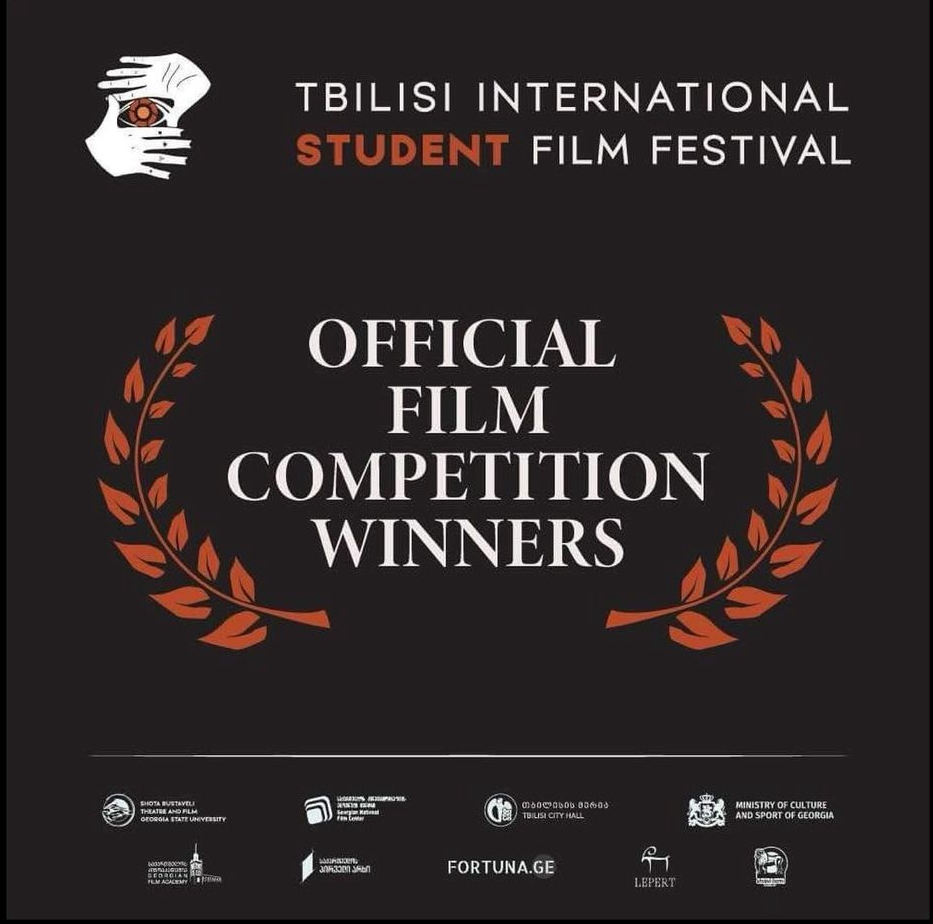
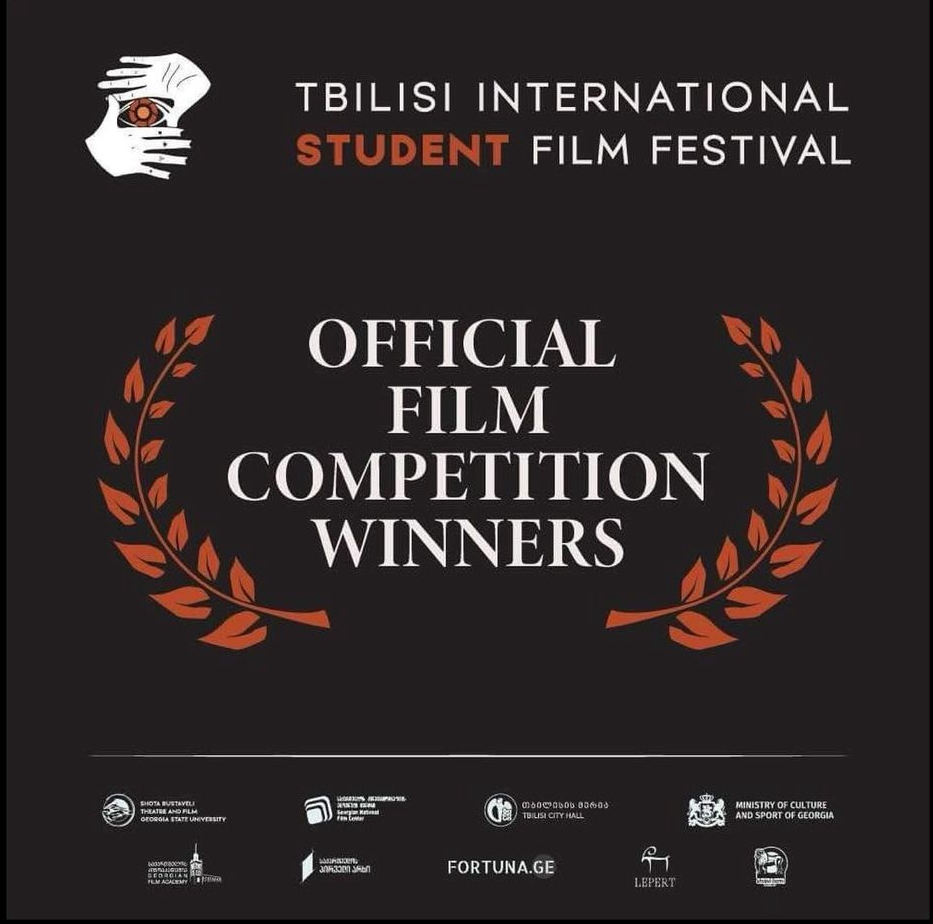

Note: Images are hyperlinked
The Flowering Man (2023)
 

Sashi undergoes a metamorphosis as a flowering plant starts growing from inside his mouth. His distanced teenage daughter undertakes a journey towards embracing the new image of her father.
It was selected in the Competition Short Fiction Section at the 18th Mumbai International Film Festival - MIFF and screened at MAMI film festival 2023
I assisted in art, set building , sourcing props, handling action props and props making.
NON AC (2023)
Maya and Jorge are immigrants from Nepal,trying to make ends meet and survive in the city of Pune,India and are often left feeling like outsiders because of the treatment they receive as immigrants.They find solace in each other's company and their friendship starts to grow into something more meaningful whose foundations somewhere lies on the idea of 'Home'.The film explores the themes of Migration, Racism,Xenophobia,Economic Class differences that penetrates deep into Indian Society.
FTII Diploma Short Fiction Film (2023)
Role: Assistant Director & Art Assistant
Art Assistance: Contributed to the art department by preparing mood boards, assisting with set design, and managing action props. Responsible for sourcing and creating props for the scenes, ensuring they aligned with the overall vision of the film.
1st Assistant Director: Led the pre-production planning, including developing shooting schedules and master sheets. Coordinated logistics, ensured smooth communication between departments, and maintained actor briefings. Managed the set during production, keeping track of time, and ensuring that all tasks were completed on schedule.
Incomplete (2023)
This story follows Tara, a young woman battling alcoholism, as she makes the courageous decision to enter rehab. Facing intense withdrawal, emotional confrontations, and deep-seated family issues, she learns that sobriety is about much more than giving up alcohol—it’s about healing wounds, finding purpose, and redefining her relationships with herself and those around her.
FTII Student Diploma Short Fiction Film (2023)
Role: Art Director
Worked as an Art Director on this project, responsible for creating mood boards for set design, planning and executing design strategies, and curating property lists. Also involved in selecting color palettes and delegating tasks to assistant designers, ensuring smooth workflow and attention to detail throughout the production process.
Mishti (2023)
A middle aged lonely gangster meeting his enemy to ask him if he is as lonely as him.
FTII Student Diploma Short Fiction Film (2023)
Role: Art Assistant
Assisted in the art department, contributing to set design, managing action props, sourcing and organizing properties, and crafting some props for the scenes. Worked in alignment with the mood boards prepared by the Art Directors and Production Designer, ensuring the visual elements were consistent with the overall vision of the film.
Chori By Choice (2023)
As Art Director for a student short-format fiction film created for the IFP 2023 World 50-Hour Film Making Challenge, I managed all aspects of art direction under tight constraints. This included framing shots on short notice, executing design work within a minimal budget, and sourcing and arranging all essential props to support the film’s visual aesthetic within the limited timeframe.
Bright Spot (2022)
This documentary explores the lasting impact of the Mumbai attacks through the lens of untold, interwoven stories from various perspectives. It mixes historical reenactments, survivor interviews, archival footage, and fictionalized portrayals of those affected—creating a deeply immersive narrative that goes beyond the headlines.
In a documentary produced for the 2022 IFP 50-Hour Film Making Challenge, I served as both Assistant Director and Art Director. My responsibilities involved preparing frames quickly under tight deadlines, managing all design work within limited budgets and resources, and maintaining detailed clap and log sheets to streamline post-production.
Savli (2022)
A man finds himself accidentally transported to the past, where he struggles with the fear that his current misfortunes might be the result of past mistakes. Unwillingly trapped in this moment, he desperately tries to understand the chain of events and whether his actions can still influence his future. The film explores themes of fate, regret, and the consequences of choices, as the protagonist tries to reconcile his present self with his unintentional journey through time.
As part of the art team for an FTII student diploma short-format fiction film (2022), I assisted in creating and arranging properties according to the mood board prepared by the art directors. My responsibilities included sourcing materials, crafting props, and keeping a meticulous track of action properties to ensure consistency in each scene.
Pasoori (2021)
A music video of a romantic love triangle and breakup.
Role: First Assisstant Director
Doorbell (2023)
A young boy undergoes a dilemma when his fiancé gives him a surprise visit to his house when actually he was expecting someone else.